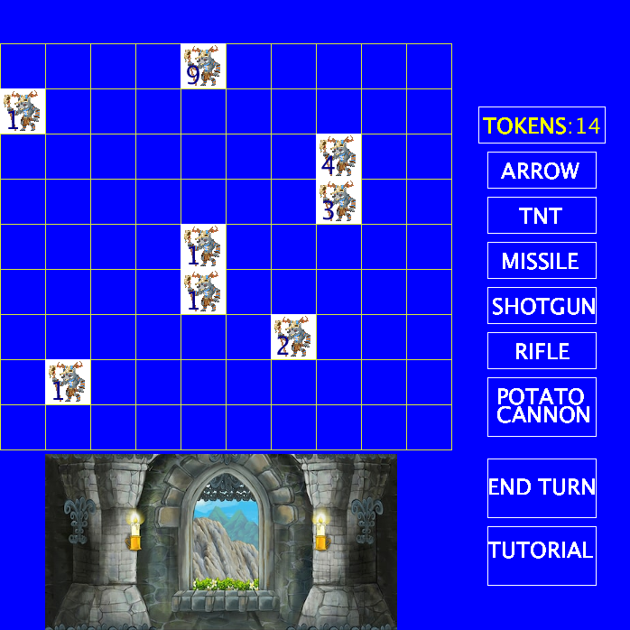
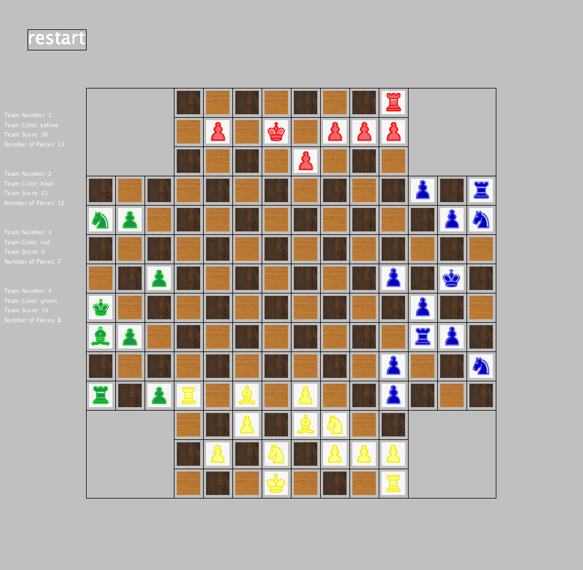

After challenging my CS teacher in high school junior year to a coding competion to make a 2D game I got the idea to make a small castle defense game. This game was my first big project, I organized my code with methods and played around with moving images
Towards the end of junior year I had an idea to create a 4 player chess game after playing real 4 player chess with some friends. While making this game I took advice from my CS teacher and organized my code even more with classes and methods. I also used moving images for the pieces. I even make three of the players play as computer and they were able to make decently educated decisions(and almost beat me sometimes).
Working long hours doing boring tasks gives you time to think. One day at work my buddy and I developed an idea to write a program that would trade real stocks for us on the US stock market. After lots of time and versions and learning and youtube, a semi-functional stocks bot has come to fruition. This was cool because I was able to teach myself a new language, I learned a lot about the stock market, and probably coolest of all I dove deep in the world of APIs.
This website! This is my very first website. This website used HTML and CSS. I learned the skills to make this website from youtube(isn't that amazing!)